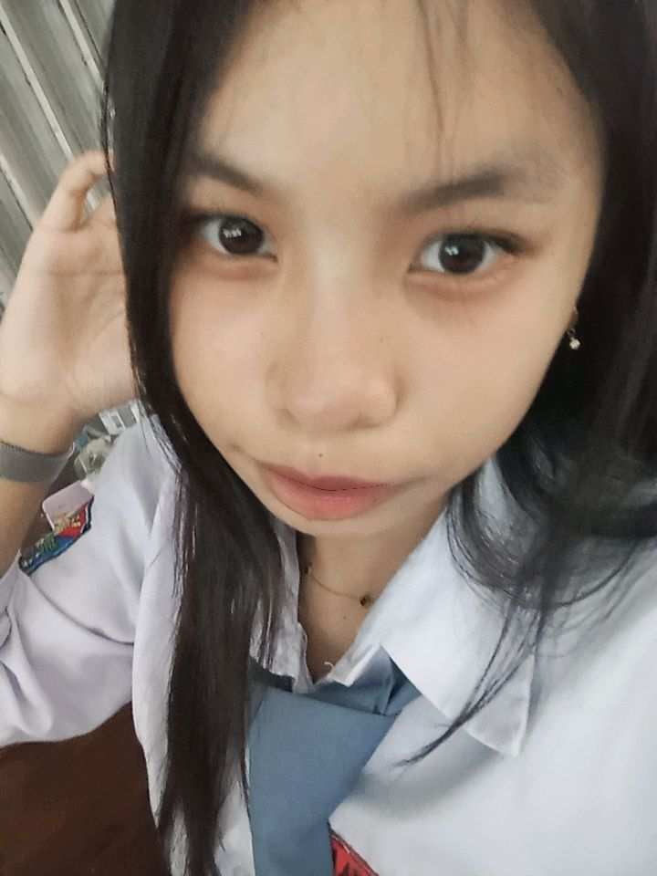
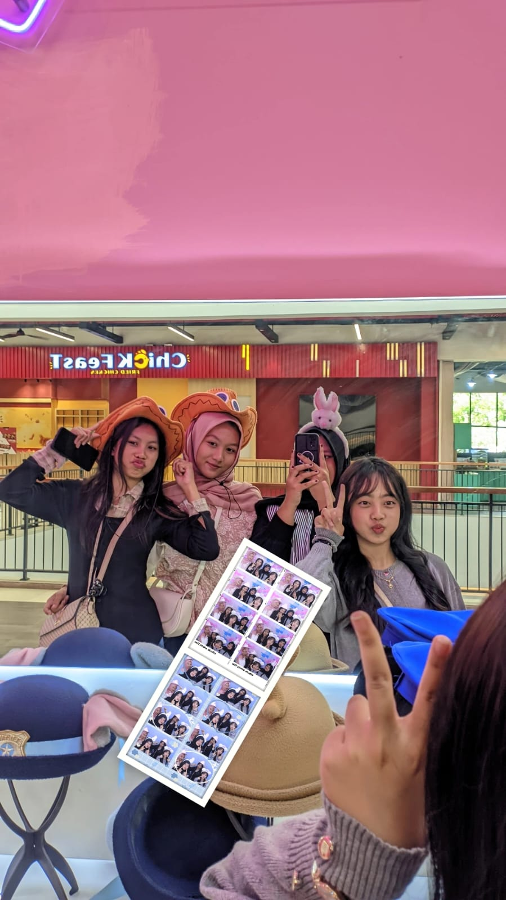
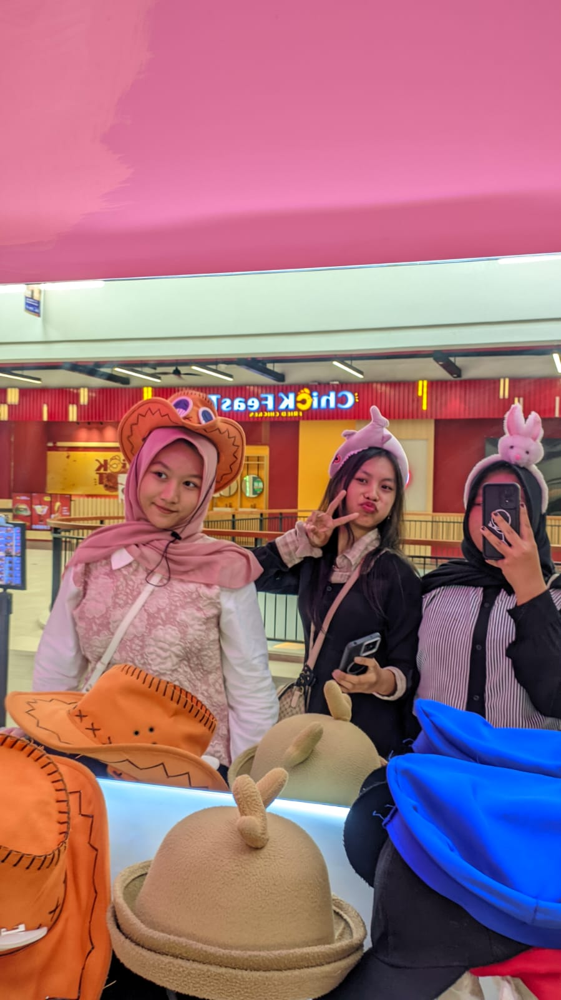
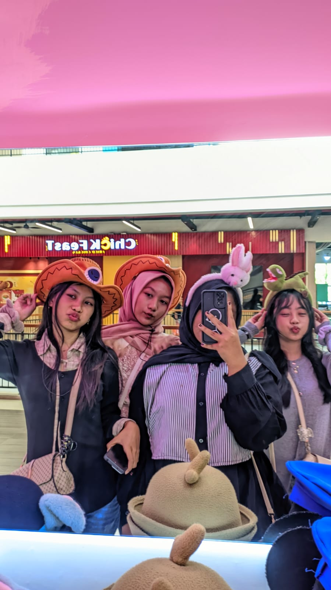
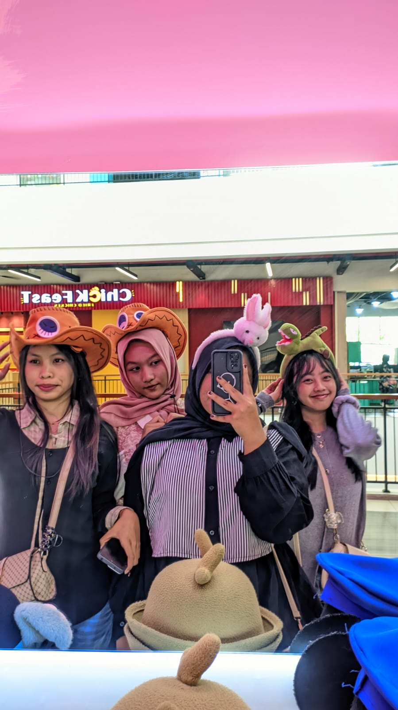

HELLO, I'M
Selamat datang di website profile saya. Saya adalah pelajar SMK Negeri 3 Kendal dari jurusan Rekayasa Perangkat Lunak (RPL).
Lihat Profile
Nama : Dhirania Khansa Anugrah
Tempat, Tanggal Lahir : Kendal, 14 November 2009
Sekolah : SMK Negeri 3 Kendal
Jurusan : Rekayasa Perangkat Lunak (RPL)
Hobi : Bermain game
Saya adalah seseorang yang mudah tertawa dan mudah menerima orang baru. Saya senang bertemu dengan orang-orang baru dan mencoba beradaptasi dengan lingkungan di sekitar saya.
Ketika memiliki waktu luang, saya suka mengisinya dengan bermain game. Selain itu, saya juga tertarik untuk mempelajari hal-hal baru terutama yang berhubungan dengan teknologi dan pemrograman.




Taman Kanak-Kanak
Pendidikan Sekolah Dasar
Pendidikan Sekolah Menengah Pertama
Jurusan Rekayasa Perangkat Lunak (RPL)
Pernah menjadi Wakil Ketua OSIS ketika bersekolah di SMP.
Pernah menjadi anggota Dewan Galang saat SMP.
Saya memiliki kelebihan dalam beradaptasi dengan lingkungan baru dan dapat menerima orang-orang baru dengan baik.
Berhasil menjadi Pramuka Garuda ketika kelas 9 SMP.
Mampu membuat tampilan website sederhana.
Memahami dasar-dasar logika pemrograman.
Mampu membuat desain tampilan website sederhana.
Mampu bekerja sama dan beradaptasi dalam kelompok.
Website pribadi yang dibuat menggunakan HTML dan CSS.
Program yang pernah dibuat saat belajar pemrograman.
Desain tampilan website yang pernah dibuat.
Aplikasi sederhana yang pernah dikerjakan.
Tugas atau proyek dari sekolah.